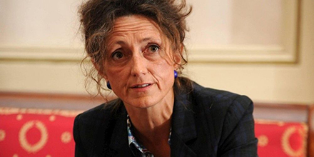

Charente
Épidémie : des chiffres encourageants
Marie Lajus, préfète de la Charente. ARCHIVES « SO » LOÏC DÉQUIER
COVID-19 - La préfète note la " faible circulation du virus " en Charente
"Nous sommes dans une dynamique de décrue", a annoncé hier Marie Lajus, préfète de la Charente, lors de son point presse hebdomadaire sur le traitement de l'épidémie dans le département. La Charente compte à ce jour 269 cas positifs au Covid-19 et dénombre onze victimes. Sept personnes sont actuellement hospitalisées dont deux en réanimation. " Soit trois personnes de moins par rapport à la semaine dernière ", précise Marie Lajus.
Département vert
La préfète a également réagi aux annonces du Premier ministre. Édouard Philippe avait notamment évoqué un classement des départements par couleurs en fonction de l'ampleur de la circulation du virus. "Nous avons des raisons de penser que la Charente pourrait être classée comme un département vert", a affirmé Marie Lajus. La préfète rappelle cependant la nécessité de "conserver des mesures sanitaires strictes", afin de limiter le nombre de nouveaux cas positifs.